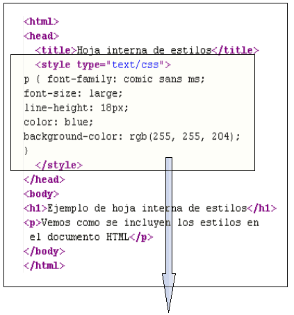
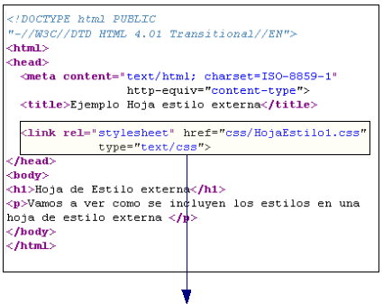

CSS
¿Qué es CSS?
El CSS (hojas de estilo en cascada) es un lenguaje que define la apariencia de un documento escrito en un lenguaje de marcado (por ejemplo, HTML). Así, a los elementos de la página web creados con HTML se les dará la apariencia que se desee utilizando CSS: colores, espacios entre elementos, tipos de letra, etc. separando de esta forma la estructura de la presentación.
¿Para qué sirve?
El código CSS hace la vida más fácil al desarrollador front-end al separar las estructura de un documento HTML de su presentación. Dicho de otro modo el HTML actuaría como es esqueleto de la web, definiendo su estructura básica, y el CSS añadiría toda la capa de personalización sobre el que la web define su aspecto final. Siguiendo este fundamento resulta muy fácil para un diseñador web realizar cambios en la apariencia de una web sin afectar de manera dramática a su contenido. El contenido siempre será el mismo, solo cambia como aquello que podemos ver. CSS es fácil de entender y aprender, y nos da un potente control de cómo diseñar los documentos HTML.
Siglas CSS
CSS son las siglas de “Cascading Style Sheets” (hojas de estilo en cascada).
Breve historia de CSS
Las hojas de estilos aparecieron poco después que el lenguaje de etiquetas SGML, alrededor del año 1970. Desde la creación de SGML, se observó la necesidad de definir un mecanismo que permitiera aplicar de forma consistente diferentes estilos a los documentos electrónicos.
El gran impulso de los lenguajes de hojas de estilos se produjo con el boom de Internet y el crecimiento exponencial del lenguaje HTML para la creación de documentos electrónicos. La guerra de navegadores y la falta de un estándar para la definición de los estilos dificultaban la creación de documentos con la misma apariencia en diferentes navegadores.
El organismo W3C (World Wide Web Consortium), encargado de crear todos los estándares relacionados con la web, propuso la creación de un lenguaje de hojas de estilos específico para el lenguaje HTML y se presentaron nueve propuestas. Las dos propuestas que se tuvieron en cuenta fueron la CHSS (Cascading HTML Style Sheets) y la SSP (Stream-based Style Sheet Proposal).
La propuesta CHSS fue realizada por Håkon Wium Lie y SSP fue propuesto por Bert Bos. Entre finales de 1994 y 1995 Lie y Bos se unieron para definir un nuevo lenguaje que tomaba lo mejor de cada propuesta y lo llamaron CSS (Cascading Style Sheets).
En 1995, el W3C decidió apostar por el desarrollo y estandarización de CSS y lo añadió a su grupo de trabajo de HTML. A finales de 1996, el W3C publicó la primera recomendación oficial, conocida como "CSS nivel 1".
A principios de 1997, el W3C decide separar los trabajos del grupo de HTML en tres secciones: el grupo de trabajo de HTML, el grupo de trabajo de DOM y el grupo de trabajo de CSS.
El 12 de Mayo de 1998, el grupo de trabajo de CSS publica su segunda recomendación oficial, conocida como "CSS nivel 2". La versión de CSS que utilizan todos los navegadores de hoy en día es CSS 2.1, una revisión de CSS 2 que aún se está elaborando (la última actualización es del 23 de abril de 2009). Al mismo tiempo, la siguiente recomendación de CSS, conocida como "CSS nivel 3", continúa en desarrollo desde 1998 y hasta el momento sólo se han publicado borradores.
La adopción de CSS por parte de los navegadores ha requerido un largo periodo de tiempo. El mismo año que se publicó CSS 1, Microsoft lanzaba su navegador Internet Explorer 3.0, que disponía de un soporte bastante reducido de CSS. El primer navegador con soporte completo de CSS 1 fue la versión para Mac de Internet Explorer 5, que se publicó en el año 2000. Por el momento, ningún navegador tiene soporte completo de CSS 2.1.
Formas de Aplicar CSS
- En línea:Está definido dentro de las propias etiquetas HTML.
La forma genérica de incluir un estilo en línea (inline) sería:
< nombre_etiqueta style="propiedad1 : valor;
propiedad2 : valor ;.....">
- Interna:
en la sección < head> del mismo documento HTML
En este ejemplo lo vemos una hoja interna en una página HTML:

Se escribe en un archivo diferente al documento HTML
En este ejemplo vemos que se hace la referencia a un archivo externo:

Comentarios en CSS
Al igual que en HTML, podemos incluir comentarios en nuestras hojas de estilo, tanto en las internas que hemos visto ahora, como en las externas que veremos a continuación.
Los comentarios son siempre recomendables para hacer luego más fácil la edición de los estilos en caso de que necesitemos cambiar algo con posterioridad. Nos pueden ayudar a recordar el motivo por el que dimos de alta una determinada regla, o en qué parte de nuestras páginas la utilizamos, o incluso el efecto que se consigue al aplicarla.
Se pueden colocar en cualquier espacio en blanco que se permita en la hoja de estilos.
Sintaxis:
Apertura: /*
Cierre: */
Ejemplo:
/* Este es un ejemplo de comentario */
Los comentarios se pueden extender desde una a varias líneas.